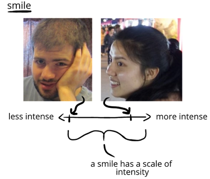

Hey! I'm Hadrian, the author of this book—I'm a humor ethnographer, theorist, and teacher. I love teaching humor, especially teaching it well!
I started The Humor Book after becoming dissatisfied about the quality and scope of existing guides to humor. They often took shortcuts, or didn't try to convey the full order and beauty that can be found to humor.
Which is a shame, because taking the time to present this order and beauty is wildly fun! It's like solving the world's best puzzle.
We'll present and solve this puzzle by taking a grounded, practical approach. We'll find coherence to humor where we thought was randomness, and potency in ourselves where we thought were limitations.
One of the challenges to learning about humor is just how big it is. It's a bit like the story of the Blind Mice and the Elephant. The blind mice come across a mysterious object, and each touch it to see what it is:
This is like humor! At different times, we've probably come across humor as:
(and so on)
What sort of elephant is this? In some ways, it's like having a jigsaw puzzle in front of us, but no box. In this book, we'll be harmoniously arranging all the pieces together, letting us step back at the end and see the whole picture of the thing clearly.
Along the way, we'll be freeing ourselves of some of the baggage we have about humor—a bunch of myths about humor that don't quite make sense when we lay them out starkly.
These myths are probably pretty familiar to us:
(and so on)
We'll take some time to iron out these informal logic fallacies—since they can cause us a lot of trouble otherwise! We'll untie these knots in our thinking, which will make our thinking about humor much lighter, truer, and more powerful.
Some humor books are fun because they skillfully tell anecdotes in an amusing style. This humor book is fun because it's a textbook. You know what I mean?
This book is a course: it teaches something—an analytical model of humor. Then it expands this model into an observational system to make sense of what's happening around us, and why.
We'll use this model as a methodology for producing smiles and laughs—and then to draw inferences about what the absence or presence of laughter means about people, events, and places.
We'll go over all this in correct sequence and at a pace that genuinely allows us to learn these things. We'll finish the course fully comfortable with an elegant, organized, and productive worldview of humor.
Since high school, I've been taking notes on when people smiled and laughed. That didn't mean I was watching comedians and their audiences—after all, cashiers, teachers, tour guides, and so on also try to make people laugh too! These are the "real life" humorists that I found compelling.
I had my own experiences in these roles—I've been an after school teacher, barista, canvasser, cashier, dance teacher, event coordinator, facilitator, greeter, tutor, and so on. In each of these positions, you sink or swim on your ability to generate smiles and laughs—and I costantly studied what worked, what didn't, when, and why all that might be.
So the observations that make the theory in this book are grounded in our day-to-day experiences—whether informal interactions between family and neighbors, applied humor from service workers or bus drivers—or just from the experiences of people looking out windows or playing games on their consoles. The normalcy of these observations keeps everything in this book grounded.
I call this "fieldwork" because a lot of studies of humor are more like "bookwork"—a structural analysis of comedies or satires, which isn't always grounded on the experiences of people. It also tends to leans toward description
In my experience, "explanation + fieldwork" fast tracks us to the central mysteries of humor, and move us face-to-face with the questions about humor that are hardest, most interesting, and most productive.
I did very little secondary research on humor for this book. It's a product of my own observation, thinking, and reading—outside of any dedicated literature review. In some ways, it's a fresh look at humor.
That means this book is not a good way to get acquainted with academic humor scholarship—whether psychological, computational, neurological, or so on. I don't see this as a failing in this book, as the goal here is practical clarity, not coordination or dialogue with an academic tradition.
The notable academic resource that I did use for this book was Warren Shibles' Online Humor Reference Guide—one of the weirdest books ever written. I'm grateful Shibles' book zapped my brain with its rays at an impressionable age, as it's set me down a path of humor-thinking I've been on for many years.
You should learn more about humor. It doesn't matter if you're "good" or "bad" at humor—because everyone should know more about humor.
It's hard to overstate how sparse formal understanding of humor is. Go into any crowd, and you'd probably find amateur-experts who'd happily stand up on a chair to talk and answer questions about all kinds of amazing things: astrophysics, baking, large-scale vegetable farming, Tudor England, and so on.It's unlikely you'd find someone who'd be willing to stand up on a chair and explain humor, though.
In fact, almost uniquely among subjects today, humor is seen as unknowable, with even the most basic questions about humor are seen as unscalable mountains. (
It leads to all kind of problems, too. On a collective level, lack of analytical and applied humor methods leads groups unable to create joyful experiences—as anyone who has taken a joyless class or attended a joyless meeting can attest.
On an individual level, a lack of analytical and applied humor methods lead to problems of action and decisions. Humor substantially contributes to our "aura of ability:" our collective ability to form acquaintances and grow closer to them—to make successful arguments—to ask for and give aid—to interpret situations—to create—to be resilient—and so on. There's no reason to limit our aura of ability.
So, in short, everyone should learn about humor. And the resources to do so should be clear, accessible, coherent, practical, straightforward, and so on—like what's attempted in this book.
Look, I'm so excited you're about to start! I've had a wonderful time putting this book together—doing so has certainly changed my own life. It's my hope that you'll find re-encountering humor provides you with long-lasting strength and wonder as well.